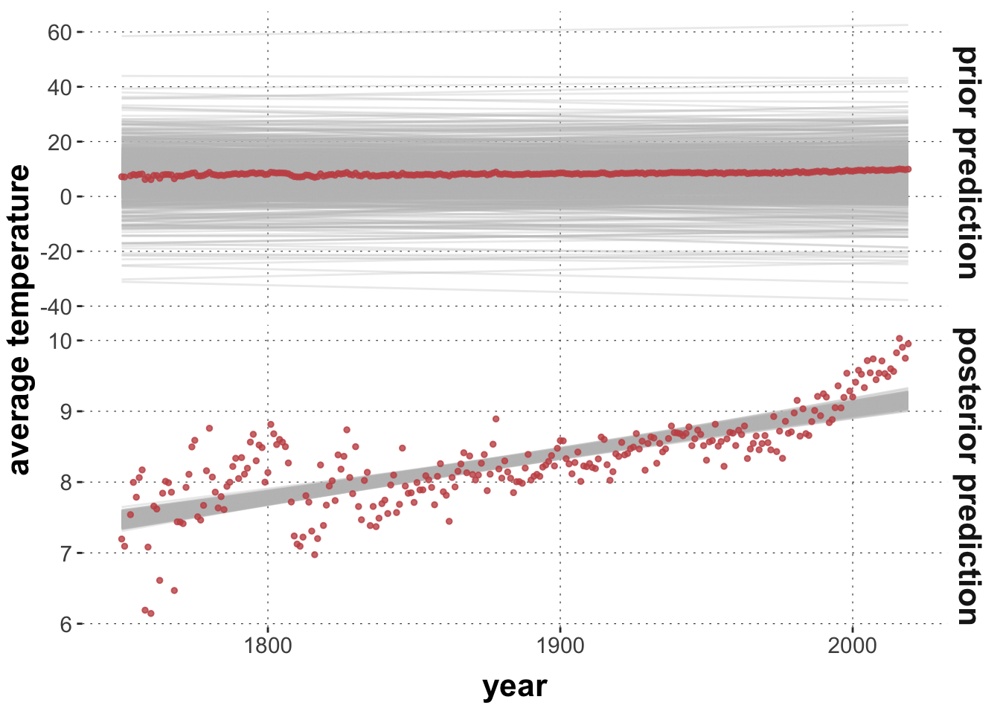
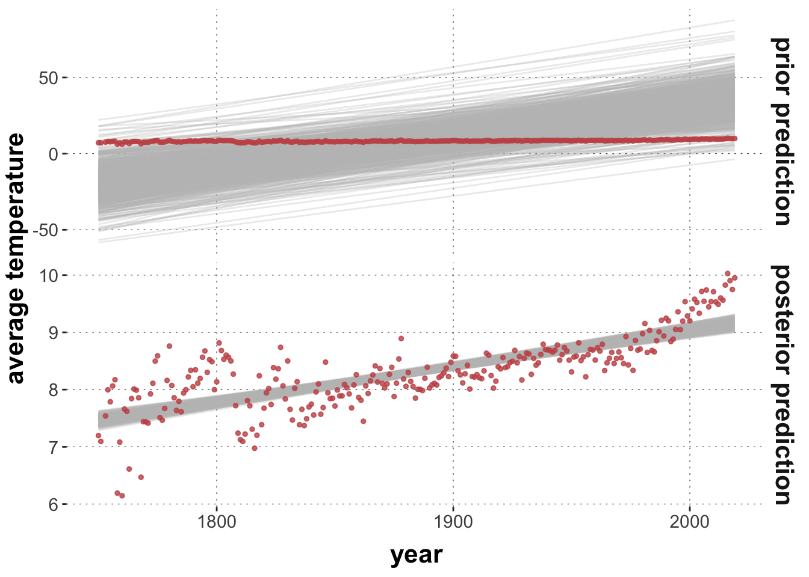
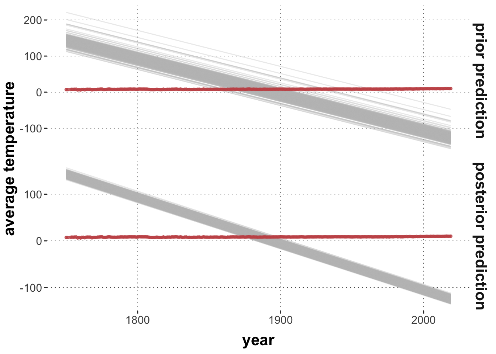
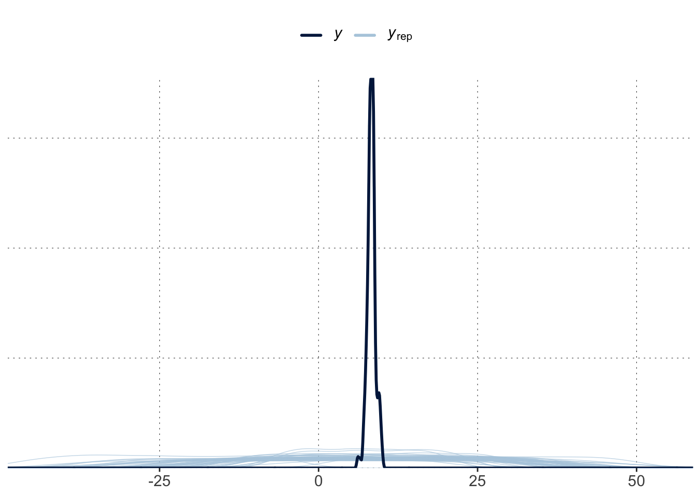
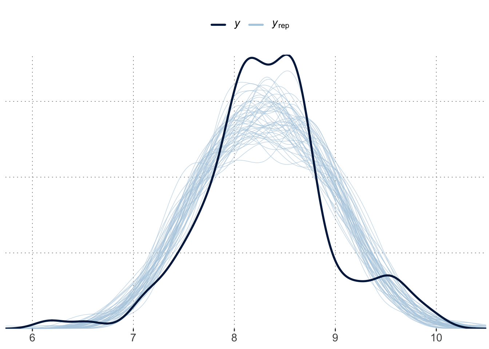

The tutorial introduces the concept of “predictive distribution”. There usually three kinds of commonly relevant predictions: (i) linear predictor value, (ii) the central tendency, and (iii) the data. The tutorial shows how to collect samples for all of these. As predictive distributions are important from the prior and posterior point of view, the tutorial also shows how to use the prior predictive distributions as intuition-fuel for the choice of prior.
Preamble
Here is code to load (and if necessary, install) required packages, and to set some global options (for plotting and efficient fitting of Bayesian models).
Toggle code
# install packages from CRAN (unless installed)pckgs_needed <-c("tidyverse","brms","rstan","rstanarm","remotes","tidybayes","bridgesampling","shinystan","mgcv")pckgs_installed <-installed.packages()[,"Package"]pckgs_2_install <- pckgs_needed[!(pckgs_needed %in% pckgs_installed)]if(length(pckgs_2_install)) {install.packages(pckgs_2_install)} # install additional packages from GitHub (unless installed)if (!"aida"%in% pckgs_installed) { remotes::install_github("michael-franke/aida-package")}if (!"faintr"%in% pckgs_installed) { remotes::install_github("michael-franke/faintr")}if (!"cspplot"%in% pckgs_installed) { remotes::install_github("CogSciPrag/cspplot")}# load the required packagesx <-lapply(pckgs_needed, library, character.only =TRUE)library(aida)library(faintr)library(cspplot)# these options help Stan run fasteroptions(mc.cores = parallel::detectCores())# use the CSP-theme for plottingtheme_set(theme_csp())# global color scheme from CSPproject_colors = cspplot::list_colors() |>pull(hex)# names(project_colors) <- cspplot::list_colors() |> pull(name)# setting theme colors globallyscale_colour_discrete <-function(...) {scale_colour_manual(..., values = project_colors)}scale_fill_discrete <-function(...) {scale_fill_manual(..., values = project_colors)}
Model predictions
Usually, when we think about what predictions a model makes, we think about the predictions it makes about the data, e.g., which data points \(y'\) is deems likely after having been conditioned on some data \(y\). These are the types of predictions that usually matter. They address the question: what will the future be like?
But complex models, with various latent variables, not only make predictions about data \(y\) but also about all computational steps from parameters \(\theta\) to data \(y\), so to speak.
A vanilla linear model (whether before or after being conditioned on some data), makes two kinds of predictions, namely:
the shape of the (hypothetical) data \(y'\) for \(x\), and
the central tendency of data \(y\) for some predictor \(x\).
Generalized linear models often also disassociate a prediction of central tendency (point 2 above), from the linear predictor that is used to compute that prediction of central tendency. So, all linear models also predict:
a linear predictor value given values of \(x\),
but for some linear models (with the identity function as a link function), there is no difference between 1 and 3.
When we speak of the *posterior predictive distribution* we usually mean predictions about data \(y'\), but the term can be (leniently) also applied to the latter two types of predictions.
Predictive samples
Samples for all of the three types of posterior predictive distributions can be obtained from a fitted model, e.g., with different functions from the tidyverse package. Here, it does not matter whether the model was fitted to data or it is a “prior model”, so to speak, fit with the flag sample_prior = "only". We look at the posterior case first, then at the prior predicitives.
Posterior predictives
Here is an example for a logistic regression model (where all the three measures clearly show their conceptual difference). Fit the model to some data first (here: predicting accuracy for two categorical factors with two levels each):
The posterior predictive (in the most general sense) makes predictions about the to-be-expected data, here a Boolean value of whether a response was correct.
Toggle code
# 2 samples from the predictive distribution (data samples)data_MT |>select(group, condition) |>unique() |> tidybayes::add_predicted_draws( fit_MT_logistic,ndraws =2 )
# A tibble: 8 × 7
# Groups: group, condition, .row [4]
group condition .row .chain .iteration .draw .prediction
<chr> <chr> <int> <int> <int> <int> <int>
1 touch Atypical 1 NA NA 1 1
2 touch Atypical 1 NA NA 2 1
3 touch Typical 2 NA NA 1 1
4 touch Typical 2 NA NA 2 1
5 click Atypical 3 NA NA 1 1
6 click Atypical 3 NA NA 2 0
7 click Typical 4 NA NA 1 1
8 click Typical 4 NA NA 2 1
A predicted central tendency for this logistic model is a probability of giving a correct answer.
Toggle code
# 2 samples from the predicted central tendencydata_MT |>select(group, condition) |>unique() |> tidybayes::add_epred_draws( fit_MT_logistic,ndraws =2 )
# A tibble: 8 × 7
# Groups: group, condition, .row [4]
group condition .row .chain .iteration .draw .epred
<chr> <chr> <int> <int> <int> <int> <dbl>
1 touch Atypical 1 NA NA 1 0.879
2 touch Atypical 1 NA NA 2 0.923
3 touch Typical 2 NA NA 1 0.942
4 touch Typical 2 NA NA 2 0.950
5 click Atypical 3 NA NA 1 0.895
6 click Atypical 3 NA NA 2 0.876
7 click Typical 4 NA NA 1 0.959
8 click Typical 4 NA NA 2 0.969
Predictions at the linear predictor level are sometimes not so easy to interpret. The interpretation depends on the kind of link function used (more on this under the topic of “generalized linear models”). For a logistic regression, this number is a log-odds ratio (which determines the predicted correctness-probability).
Toggle code
# 2 samples for the linear predictordata_MT |>select(group, condition) |>unique() |> tidybayes::add_linpred_draws( fit_MT_logistic,ndraws =2 )
# A tibble: 8 × 7
# Groups: group, condition, .row [4]
group condition .row .chain .iteration .draw .linpred
<chr> <chr> <int> <int> <int> <int> <dbl>
1 touch Atypical 1 NA NA 1 2.61
2 touch Atypical 1 NA NA 2 2.14
3 touch Typical 2 NA NA 1 2.83
4 touch Typical 2 NA NA 2 2.88
5 click Atypical 3 NA NA 1 2.06
6 click Atypical 3 NA NA 2 1.82
7 click Typical 4 NA NA 1 3.25
8 click Typical 4 NA NA 2 3.39
Prior predictives
To sample from the prior predictive we first need to initialize the model, setting the option sample_prior = "only". It is necessary to specify priors for all parameters that would otherwise be improper.
Toggle code
fit_MT_logistic_prior <- brms::brm(formula = correct ~ group * condition,data = aida::data_MT,family = brms::bernoulli(),# rather unspecific priorsprior =prior(student_t(3,0,2.5)),# tell BRMS to not condition on the datasample_prior ="only" )
Obtaining samples from the prior predictive distributions is then the same as before (from this point on it doesn’t matter whether the model was trained on data or not). For example, here are two samples from the prior predictive (data) distribution:
Toggle code
# 2 samples from the predictive distribution (data samples)data_MT |>select(group, condition) |>unique() |> tidybayes::add_predicted_draws( fit_MT_logistic_prior,ndraws =2 )
# A tibble: 8 × 7
# Groups: group, condition, .row [4]
group condition .row .chain .iteration .draw .prediction
<chr> <chr> <int> <int> <int> <int> <int>
1 touch Atypical 1 NA NA 1 1
2 touch Atypical 1 NA NA 2 0
3 touch Typical 2 NA NA 1 1
4 touch Typical 2 NA NA 2 0
5 click Atypical 3 NA NA 1 0
6 click Atypical 3 NA NA 2 0
7 click Typical 4 NA NA 1 0
8 click Typical 4 NA NA 2 0
Notice that a posteriori correct trials are predicted to be very likely, but a priori they are not more likely than incorrect ones. - Wait, how do we know? Let’s poke a bit.
Exercise 1
Obtain sufficient samples from the prior predictive distribution for the central tendency (the predicted probability of correctness) to address the question of whether this model, as specified above, initially predicts correct and false answers to be equally likely. Use Bayesian summary statistics to corroborate your claim.
Solution
Let’s obtain 4000 samples for each different quadruple of \(x\) values and summarize the resulting samples:
Checking a model’s prior predictive distributions is an integral part of the Bayesian workflow. It is not always apparent what a particular choice of prior entails for the model’s other parameters, or its prior (data) predictive. Let’s explore how we can test implications of prior choice visually.
We are using the fit of a linear model to the (scaled) average world temperature data for the year 2025 to 2024. The function plot_predictPriPost below allows you to specify a prior for the model’s paramters for which it will show samples from the model’s prior and posterior prediction of the measure of central tendency, as well as the data. Plotting exercises like these inform you about how strong or biased your priors are, whether they are reasonably in line with your intentions, and whether they seem to inform the posterior strongly (an informal, punctuated sensitivity analysis).
Toggle code
plot_predictPriPost <-function(prior_spec, ndraws =1000) {# get the posterior fit fit <-brm( avg_temp ~ year,prior = prior_spec,data = aida::data_WorldTemp,silent =TRUE,refresh =0 )# retrieve prior samples from the posterior fit fit_prior_only <-update( fit,silent =TRUE,refresh =0,sample_prior ="only" ) get_predictions <-function(fit_object, type ="prior prediction") { tidybayes::add_epred_draws( fit_object, newdata =tibble(year = aida::data_WorldTemp$year),ndraws = ndraws,value ='avg_tmp' ) |>ungroup() |>select(year, .draw, avg_tmp) |>mutate(type = type) }get_predictions(fit, "posterior prediction") |>rbind(get_predictions(fit_prior_only, "prior prediction")) |>mutate(type =factor(type, levels =c("prior prediction", "posterior prediction"))) |>ggplot() +facet_grid(type ~ ., scales ="free") +geom_line(aes(x = year, y = avg_tmp, group = .draw), color ="gray", alpha =0.3) +geom_point(data = aida::data_WorldTemp, aes(x = year, y = avg_temp), color = project_colors[2], size =1, alpha =0.8) +ylab("average temperature")}prior_baseline <-c(prior("normal(0, 0.02)", class ="b"),prior("student_t(3, 8, 5)", class ="Intercept"))plot_predictPriPost(prior_baseline)

Toggle code
prior_opinionated <-c(prior("normal(0.2, 0.05)", class ="b"),prior("student_t(3, 8, 5)", class ="Intercept"))plot_predictPriPost(prior_opinionated)

Toggle code
prior_crazy <-c(prior("normal(-1, 0.005)", class ="b"),prior("student_t(3, 8, 5)", class ="Intercept"))plot_predictPriPost(prior_crazy)

Exercise 2
Test different prior specifications, and inspect the resulting prior and posterior predictions. This is just to build your intuitions, and also to help you try out different kinds of prior probability distributions (try a lower- or upper-bounded distribution, if you dare).
Exercise 3
Set up a similar plotting pipeline for another model, e.g., the logistic regression model used above, or (ideally) a model you really care about.
Visual predictive checks
Let’s have a closer look at prior and posterior predictives, and the functions that we can use to explore them. Here, we fit a regression model with the “opinionated priors” from above, obtaining both posterior and prior samples for it.
The bayesplot package has a number of visual predictive check functions nested inside the function pp_check. Here are examples.
Without additional argument pp_check compares the overal observed distribution of the repsonse variable to the prior/posterior predictive distribution. Check the observed distribution (marginal of \(y\)) first:
The prior predictive check shows that this prior is way less “opinionated” or biased than its name may suggest:
Toggle code
brms::pp_check(fit_prior, ndraws =50)

The posterior predictive check can reveal systematic problems with the model, such as here: an inability to capture the bimodal-ish shape of the data.
Toggle code
brms::pp_check(fit_posterior, ndraws =50)

There are number of different plots pp_check is able to produce. For fine-grained plotting and exploring, the bayesplot package offers flexible plotting tools. These come in pairs: predicitve distributions only show the predictions, while predictive checks also show the data. See help("PPC-overview") and help("PPD-overview") for more information.
The general workflow is that you first extract samples from the relevant predictive distribution (in matrix form), like so:
The light blue histogram indicates the distribution of the values of the test statistics under the predictive distribution (here: posterior). The darker blue line indicates the value of the test statistic for the observed data.
In this case, the observed test value is rather central in the posterior predictive distribution, thus suggesting that, as far as the standard deviation is concerned, the model cannot be criticized for its posterior predictions.
Exercise 5
Try a similar ppc_stat plot for the prior predictive. Can you find a test statistic for which the model looks adequate?
Solution
Looking at the prior predicted mean is not too bad (at least visually).
That is because the predictions are very wide. There is nothing wrong about that! But, of course, another criterion that the prior predictive distribution blatantly fails is to predict the deviation in the data adequately (again this is, arguably, how it should be if we want to learn from the data):
Using model predictions, we can also compute Bayesian \(p\)-values as handy summary statistics for visual predictive checks. A single number never replaces the information we obtain from (good) plots, but is easier to communicate and may help interpretation (though should never solely dominate decision making).
Let’s focus on the posterior model for the temperature data and apply a rigorous (data-informed) test statistic: the standard deviation for the data observation up to 1800.
Exercise 6: Predictive \(p\)-values w/ SD as test statistic
Make sure you understand how the code in the last code block works. Interpret the numerical result.
Solution
We see an estimated \(p\)-value of close to one, which is really bad (for the chosen test statistic). It means that the model never predicts data with a value of the test statistic that is that extreme. Notice that “extremeness” here means “very high or very low”. So in this case, we would clearly have ground of accusing the model to fail to predict the aspect captured by this test statistic.
Exercise 7: [ambitious] Likelihood as test statistic
Use the code above to calculate a Bayesian \(p\) value for the same data and model but assuming that the likelihood of the data is the test statistic. Note that brms::log_lik is a handy function for obtaining the likelihood of some \(y'\) –be it observed, predicted or made up– given a model (prior or posterior)
Interpret the result you get (also in relation to the results from the previous exercise).